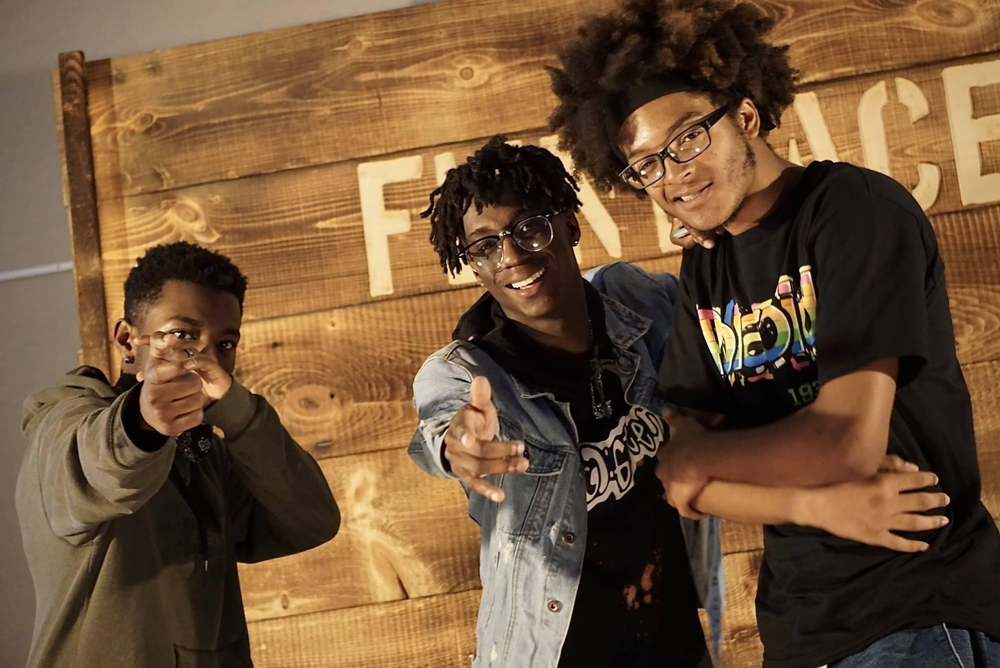
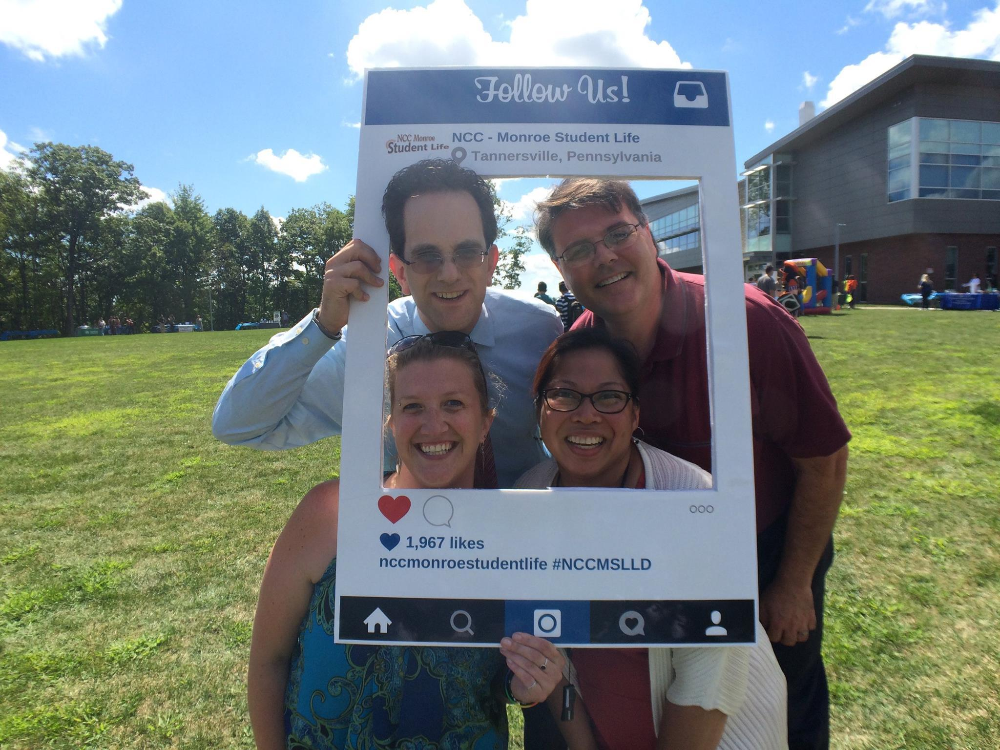
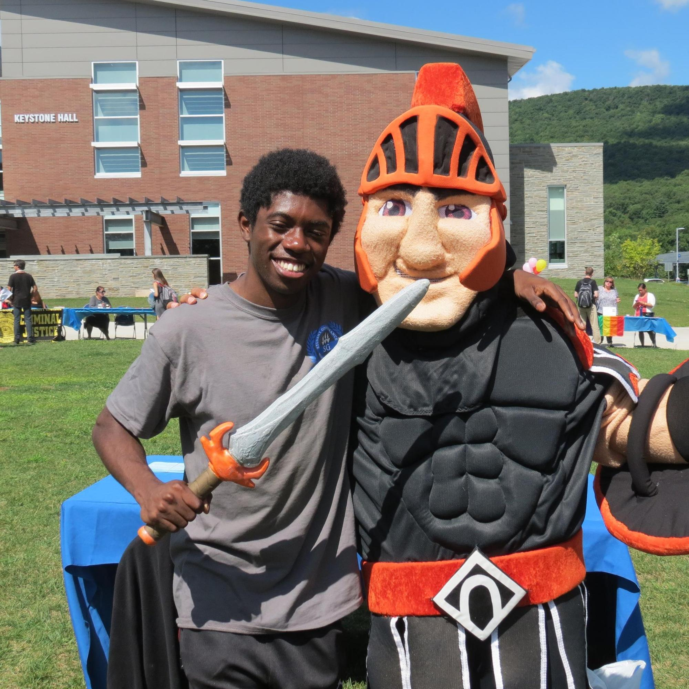
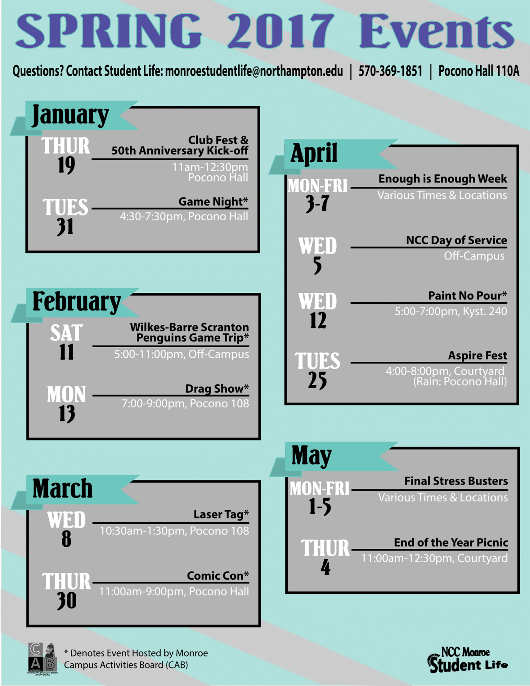

NCC Pocono Student Life
As a student at Northampton Community College Monroe Campus—now NCC Pocono—I produced social media content and strategy.
During my year and a half in this role, I created more than 40 posters and flyers for various events, took over 3000 photos for various marketing publications, produced over 2 hours of video content, brought the Facebook page over 1,200 likes, doubled the Twitter followers, quadrupled the Instagram followers, launched the Snapchat account & brought in over 250 followers, and assisted in the development / execution of over 30 campus events.



